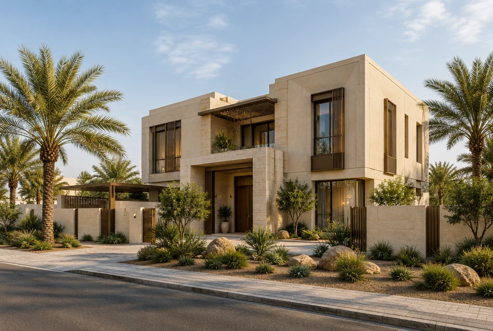
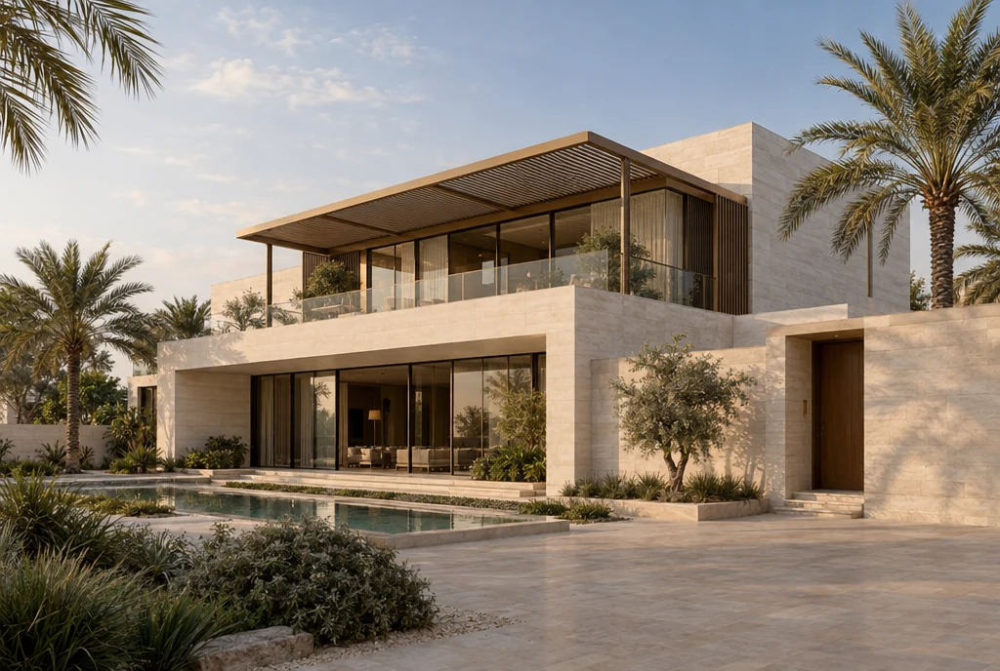

المشاريع والتصاميم
مساحات للحياة.
وآفاق للطموح.
استكشف تصورات لفلل ومبانٍ شاهقة في الخليج، بمواد دافئة ومساحات مظللة وتصاميم تستجيب للمكان.
رؤى تستكشف إمكانات العمارة. تعرض المجموعة التالية تصورات مولّدة بالذكاء الاصطناعي، وليست مشاريع منفذة لمكتب الحصن.


الفيلا الخليجية المعاصرة
حجر بألوان دافئة، وفتحات مظللة، ومساحات خارجية تحفظ الخصوصية. تصور سكني يستلهم بيئة الخليج وتقاليده في السكن.
استكشف التصميم
حضور مدروس في الأفق
برج رشيق بإيقاع إنشائي واضح وواجهات مظللة، وقاعدة ترحب بالمشاة على مستوى الشارع.
استكشف التصميم
سكينة الفناء
منزل يستلهم العمارة الإماراتية بمدخل مظلل وفناء يحفظ الخصوصية، مع معالجة معاصرة لعناصر المشربية التقليدية.
استكشف التصميم
برج المكاتب المظلل
برج تجاري بعناصر حجرية رأسية وواجهات زجاجية غائرة، يتصل بالشارع من خلال ساحة عامة مظللة.
استكشف التصميم

المنزل الساحلي
فيلا تستلهم أجواء البحرين بكتل حجرية أفقية وشرفات مظللة، وعلاقة هادئة بين المسكن والمشهد المحيط.
استكشف التصميم
شرفات فوق المدينة
برج سكني بشرفات غائرة وتراسات ركنية مزروعة وقاعدة خضراء، يمنح الحياة اليومية مساحات أكثر رحابة.
استكشف التصميمتصورات معمارية مولّدة بالذكاء الاصطناعي للإلهام البصري. لا تمثل هذه الصور مشاريع منفذة لمكتب الحصن.
لنبدأ معاً